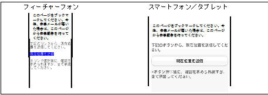

メールアドレスを入力して、「メールアドレスを送信」をクリックします。

「現在位置を送信」ボタンをクリックします。
※現在位置を送信画面(本ページのURL)をブックマークしてください。初回のアクセス以降は、招集メールが届いた場合、ブックマークから本ページを選択することにより、「(1) メールアドレス入力」の処理を省略することができます。
①「参集場所」を選択して、②「送信」ボタンをクリックします。
・「所定の参集場所」：予め決まっている、参集場所を選択します。
・「近くの参集場所」：現在の位置から、近くの参集場所を自動的に表示します。
なお、フィーチャーフォンは、３箇所を表示、スマートフォン/タブレットは、８箇所表示します。
もし、参集場所へ向かえない場合は、③チェックボックスをクリックし、理由を入力して、②「送信」ボタンをクリックします。